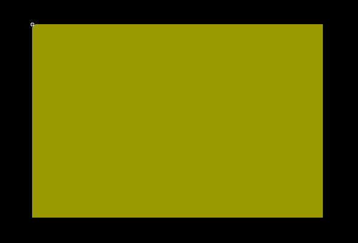
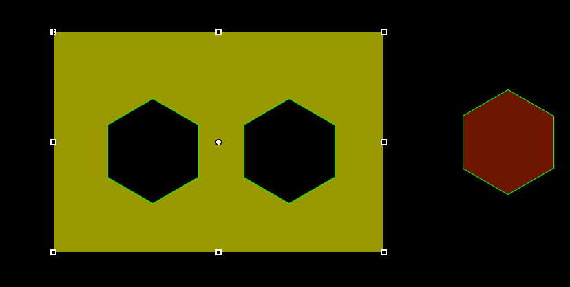
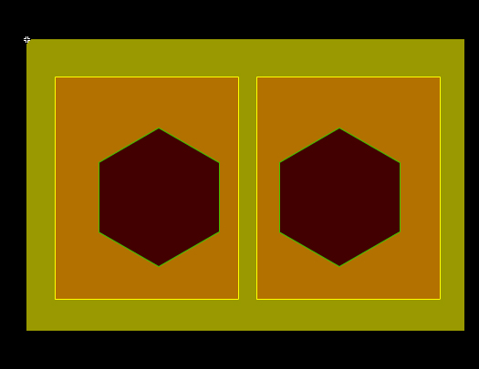
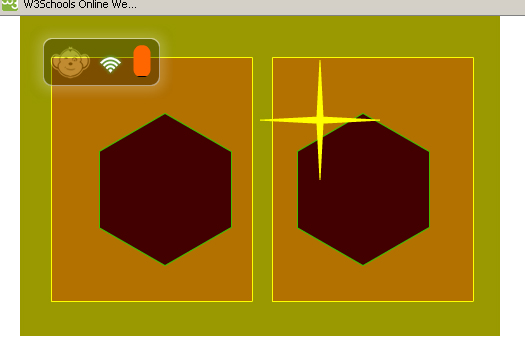

The Brass Monkey control pad designs will typically use the graphics area of a button to sense any touches for script events. There are times when you might want to create a larger area than the button itself. Lets imagine we have a fast action game with two buttons, and that game-play is so intense that looking at the controls is not an option. We will have two buttons but we will divide the control area in half, reacting to a much larger area than the button graphics areas.
The ButtonHitRect sample code will demonstrate how to set this up. The accompanying fla file in its lib folder provides a few simple assets for this purpose.
An empty movie clip is created and prepared for export. It will be our device-client's control pad. A simple background symbol is defined, and and named-instance placed onto the empty movie clip. We'll call it 'background'.

A button symbol and a corresponding 'Down' state is created. The control parser determines what are up-states and down-states by the qualified class name and the instance names. Here we have a 'SimpleButton' and 'SimpleButtonDown' symbols and we have placed the 'SimpleButton' instances on the control pad where we want them to be, and we have given them script-names for our code hooks, 'left' and 'right' as their instance-names. The down-state symbol is placed onto the control pad movie clip, and it is not named. Only a single instance of the down state needs to be on the movie clip frame to be available for export.
The Black hexagons are the 'left' and 'right' button instances. And the red hexagon is an unnamed instance which is associated as the down-state by qualified class naming conventions.

Since the hypothetical game this control is for requires giant hit-rectangles for the best user experience, we will define another symbol for export. To make it easier to see and adjust the hit-rectangles of the two buttons, another pair of display objects are put on the stage. We'll name the instances as 'leftRect' and 'rightRect', and place them where we want them. The two semi-transparent rectangles will be used as references and become the expanded hexagon button reaction areas.

// A simple scheme to be held in landscape mode.
var sq:HitRectDemoScheme=new HitRectDemoScheme();
//parse the scheme, and add the actual design orientation, width and height.
appScheme = BMControls.parseDynamicMovieClip(sq,false,true,'landscape',480,320, AppDisplayObject.NEAREST);
//we will remove the reference display object from the control pad design but then assign their rectangles to the hexagon buttons.
var bmImageL:BMImage = appScheme.removeChildByName("leftRect") as BMImage;
var bmImageR:BMImage = appScheme.removeChildByName("rightRect") as BMImage;
//Grab the hexagon button references by name.
var buttonL:BMButton= appScheme.getChildByName("left") as BMButton;
var buttonR:BMButton = appScheme.getChildByName("right") as BMButton
//apply the new larger hit rect to the buttons.
buttonL.hitRect=bmImageL.rect;
buttonR.hitRect=bmImageR.rect;
// Add controls to the brassmonkey session.
bm.session.registry.validateAndAddControlXML(appScheme.toString());
To make the touches more apparent, lets add a handler to the device for touches on top of button-presses. This will help illustrate the location of the touch and how the extended hit rectangle of the button will activate the downstate and script events. We will also add the control design onto the stage so you can reference the locations of the hit-rectangle display objects that were removed before sending to the device-clients.
